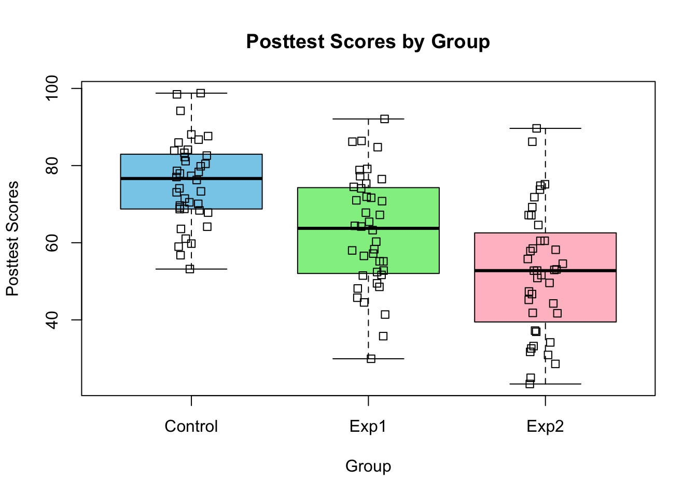
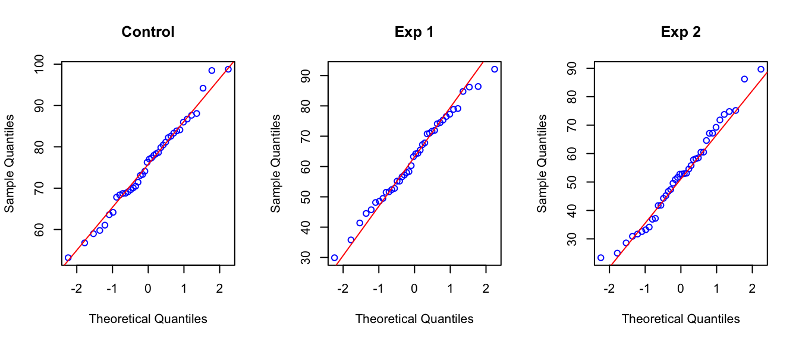
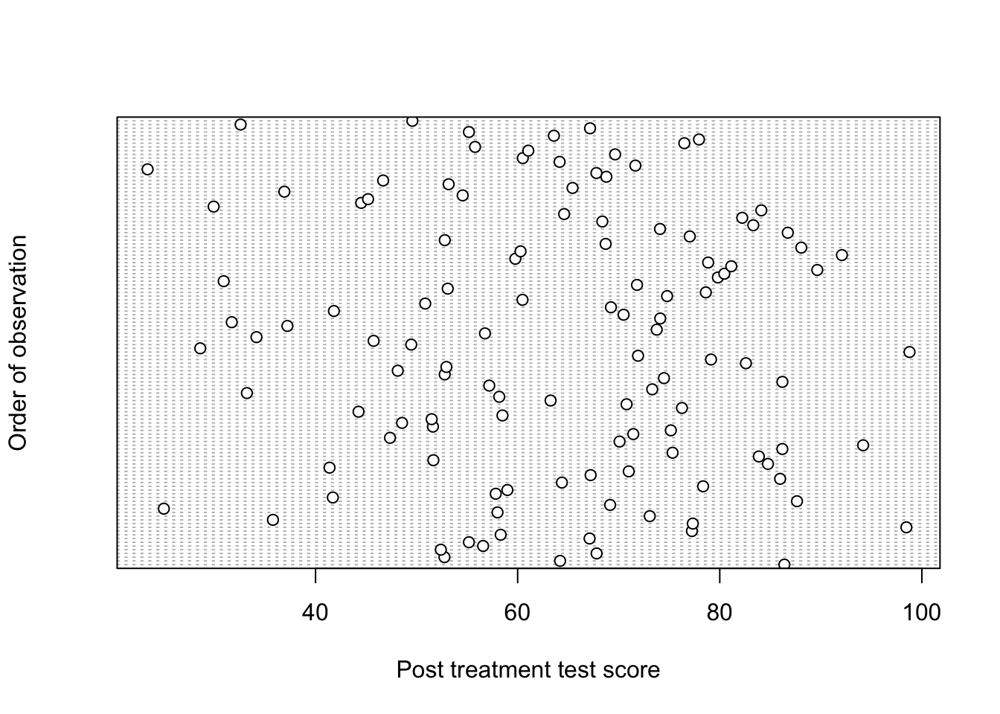

Completely Randomized Designs (CRDs) are the simplest experimental designs. They are used when experimental units are uniform enough and we expect them to react similar to any given treatment. In other words, we have no reason to suspect that a group of experimental units might react differently to the treatments. We also don’t expect any effects (besides possibly a treatment effect) to cause any systematic changes in the response. So, we don’t have to block for differing experimental units or any nuisance factors.
Remember experimental design is the procedure for how experimental units are grouped and treatments are applied. We have already said that there are no blocks in CRDs. So randomisation occurs without restriction and to all experimental units. More generally, each of the \(a\) treatments are randomly assigned to \(r\) experimental units, such that each experimental unit is equally likely to receive any of the treatments. This means that there are \(N = r \times a\) experimental units in total. We only consider designs that are balanced meaning that there an equal number of experimental units per treatment, i.e. a treatment is applied to \(r\) units. The experiment is then said to have \(r\) replicates.
The aim when analysing CRDs is to determine whether there is an effect of the treatment factor. We accomplish this by testing for differences in the treatment means (mean of response values in each treatment) through analyses different sources of variation in the response. This will become clear as we progress.
5.1 Example: The effect of social media multitasking on classroom performance.
As a student, I used to believe I could multitask effectively. I would scroll through my phone during lectures, study while texting friends, or listen to podcast while driving. It felt like I was paying attention to everything, but in hindsight, I can barely recall the details of those podcasts. I often had to revisit lectures or restart study sessions because my focus wasn’t truly there. This tendency extends beyond student life. In the average workplace, tasks are frequently interrupted by social media, email checks, or notifications. Many of us feel the constant pull of our phones when trying to concentrate, whether we’re working, studying, or even relaxing.
In an era of perceived multitasking, where devices and distractions dominate our attention, it’s worth asking: Does social media multitasking impact academic performance of students?
Example 5.1
Two researchers from Turkey, Demirbilek and Talan (2018), conducted a study to try and answer this question. Specifically, they examined the impact of social media multitasking during live lectures on students’ academic performance.
A total of 120 first-year undergraduate students from the same Turkish University were randomly assigned to one of three groups:
Control Group: Students used traditional pen-and-paper note-taking.
Experimental Group 1 (Exp 1): Students engaged in SMS texting during the lecture.
Experimental Group 2 (Exp 2): Students used Facebook during the lecture.
Over a three-week period, participants attended the same lectures on Microsoft Excel. To measure academic performance, a standardised test was administered.
The analysis of experimental data is determined by the design. This is the first thing we need to investigate. The design dictates the terms that we will include in our statistical model and so it is crucial to be able to identify the design and all factors included (blocking and treatment). It is also important to check that randomisation has been done correctly and determine the number of replicates used. In the previous chapter we started doing this by creating a summary of the design and we do the same here. From the description of the study, it is clear that:
Response Variable: Academic performance, as measured by test scores.
Treatment Factor: Level of social media multitasking.
Treatment Levels (Groups): Control, Exp 1, and Exp 2.
Students were randomly assigned to one of the three groups, and performance was measured for each individual. Although this may seem obvious, they only took one measurement per student, so we don’t have to worry about pseudoreplication. This setup indicates that the students are both the experimental units and the observational units in this study. With a total of 120 experimental units and three treatments, the experiment has 40 replicates. Since only one treatment factor was investigated, and no blocking was performed, this is classified as a single-factor Completely Randomized Design (CRD). Here is the study breakdown:
Response Variable: Academic Performance
Treatment Factor: Level of Social Media Multitasking
Before we continue, now is the time to note that we won’t be using the real data collected in this experiment. It wasn’t available but I have simulated data to match their results. I’ve also made some other modifications such as the original study included 122 students but to ensure a balanced design I include only 120.
5.2 Exploratory data analysis (EDA)
Before we start any analyses, we have to conduct some exploratory data analysis to get a feel for our data. We start by checking whether it has been read in correctly and then look at some descriptive statistics.
In R, we read in the data set and then use some commands to inspect the data set:
multitask <-read.csv("Datasets/multitask_performance.csv")nrow(multitask) # check number of rows
[1] 120
head(multitask) # check first 5 rows
Group Posttest
1 Exp1 86.39427
2 Exp1 64.19996
3 Exp2 52.75394
4 Control 67.81147
5 Exp1 52.39911
6 Exp1 56.58150
tail(multitask) # check last 5 rows
Group Posttest
115 Control 77.94344
116 Control 63.58444
117 Exp1 55.17758
118 Exp2 67.16150
119 Exp2 32.58373
120 Exp2 49.58119
summary(multitask)
Group Posttest
Length:120 Min. :23.38
Class :character 1st Qu.:52.67
Mode :character Median :65.01
Mean :63.59
3rd Qu.:76.32
Max. :98.78
The data set consists of 120 rows (each row representing a student) and two columns (Group and Posttest). The first column, Groups, contains the treatment the student was assigned and the Posttest column contains the response measure. Using the functions head and tail, we can look at the first and last 5 rows and the function summary provides us with a description of each column. We do this to check that R has read in our data correctly (you can view the whole data set by running view(multitask) as well). The summary tells us that the Group column is of the class “character”. For our analysis, we want it to be read as a factor:
Group Posttest
Control:40 Min. :23.38
Exp1 :40 1st Qu.:52.67
Exp2 :40 Median :65.01
Mean :63.59
3rd Qu.:76.32
Max. :98.78
Now, we can see that there are 40 replicates per treatment group, confirming that the experiment is balanced. I have assumed that, based on the results shown, that the Posttest scores were recorded as percentages and using the summary we can quickly check whether there are any observations that are not on the appropriate scale or might be outliers. Looks good so far!
5.3 Checking assumptions
Demirbilek and Talan (2018) had several research questions, but here we only consider the following:
Are there any differences in mean academic performance between the three groups?
You might think that we could perform three t-tests (Control vs Exp 1, Control vs Exp 3, Exp 1 vs Exp 2). We could, but the problem with this approach is what we call multiple testing. When conducting many tests, there is an increased risk of making a Type 1 Error (rejecting the null hypothesis when it is in fact true) 1.
When we have more than two groups, we can use a one-way analysis of variance (ANOVA) which can be seen as an extension of a \(t\)-test and is called “one-way” because there is a single factor being considered. In the next section, we will see that ANOVA is a linear model and some of the assumptions are about the model errors (just like regression):
There are no outliers.
The errors are independent.
The errors are normally distributed.
All groups have equal population variances.
We need to check the validity of these assumptions. There are both formal and informal techniques. Formal techniques (i.e. hypothesis tests) are not always appropriate for several reasons such as small data sets or that testing one assumption usually requires that the other two hold, complicating the order of tests. Informal techniques are more than sufficient and in this section, we stick with them.
Outliers
Outliers are unusual observations (response values) that deviate substantially from the remaining data points. They can have a large influence on the estimates of our model. Think of statistics such as means and variances, outlying observations will shift the mean towards them and distort the variability of the data.
If we’re lucky, outliers are artefacts of data recording or entering issues, such as a missing decimal points or incorrect scaling (called error outliers). These types of outliers can be corrected and the analysis can be done as usual. If, however, there are freak observations that are not clearly due to anything like data inputting, then they are likely genuine unusual responses (called interesting outliers) and should not be discarded. There are many ways of identifying and dealing with outliers (Aguinis, Gottfredson, and Joo (2013) found 29 different ways in the literature). Here, it is recommended that the analysis should be run with and without the outliers to see whether the conclusion depends on their inclusion. When dealing with outliers, it is best to be transparent and clear about how they were handled. Simply removing outliers with no explanation is questionable research practice.
A good way to check for outliers, is to inspect the data visually with a box-plot of your data grouped by treatment.
boxplot(Posttest ~ Group, data = multitask, col =c("skyblue", "lightgreen", "pink"), main ="Posttest Scores by Group", xlab ="Group", ylab ="Posttest Scores")stripchart(Posttest~Group, data = multitask, vertical =TRUE, add =TRUE, method ="jitter")

Figure 5.1: Box-plots of Post treatment scores by group.
The first line of code plots the box-plot and by inputting Posttest~Groups as the first argument we are say plot the values of Posttest by Groups. There are extra graphical parameters specified to make the plot look a bit nicer. The function stripchart is used to overlay the data points. Based on these plots, there aren’t any obvious outlying observations.
Equal population variance
The model assumes that population variances in different levels of the treatment factor are equal. That is, it is assumed in ANOVA that the variance of the response within each treatment is a separate estimate of the same population variance.
Since we only have sample data, we would not expect that the sample variances to be exactly the same. If they are different it does not mean the assumption is not met. We expect them to differ a bit due to chance simply because we are sampling. Every time we sample from a population, the data set will be different and so will it’s variability. The sample variances need to be similar enough so that our assumption of equal population variance is reasonable.
To check this assumption, we can inspect the box-plots again and compare the heights. More specifically, we look at the interquartile ranges (IQR). From looking at the plot, the IQRs do not vary widely. If you prefer to look at the actual values, we can use R to obtain them:
Another measure of variability we can look at, are the standard deviations (sd’s). With the same line of code but just replacing the function we want to apply, we obtain the sd of each group:
The rule of thumb is to use the ratio of the largest to smallest standard deviation and check whether it is smaller than five. In our case, the smallest sd (of the Control group) is about 1.5 times smaller than the largest sd (of the Exp 2 group) which is acceptable.
Normally distributed errors
We can check this assumption by looking at the residuals after model fitting. A common misconception is to think that the response needs to be normally distributed. However, it is only the unexplained variation, i.e. the errors or residuals (estimates of errors), that we assume to be normally distributed. Of course, if the response has a clearly non-normal distribution (e.g. Binomial), then the residuals are likely to be non-normal as well. So, we can check our response values before hand for obvious deviation from normality, but we have to check this assumption again after fitting our model. Things to look for are asymmetric box-plots which indicate skew distributions. We also want to check that the data points tend to cluster around the median. In Figure 5.1, there are no signs of any clear deviation from normality. Other graphs we could look at are histograms or Quantile-Quantile (Q-Q) plots. Q-Q plots show the theoretical quantiles of the standard normal distribution against the actual quantiles of our data. We want our data to be as close to the xy line as possible (deviations in the tails are expected).
par(mfrow =c(1,3))# First we subset the data for each groupcontrol <- multitask$Posttest[multitask$Group =="Control"]exp1 <- multitask$Posttest[multitask$Group =="Exp1"]exp2 <- multitask$Posttest[multitask$Group =="Exp2"]qqnorm(control, pty =4, col ="blue", main ="Control")qqline(control, col ="red")qqnorm(exp1, pty =4, col ="blue", main ="Exp 1")qqline(exp1, col ="red")qqnorm(exp2, pty =4, col ="blue", main ="Exp 2")qqline(exp2, col ="red")

Figure 5.2: Q-Q plots of response per treatment group.
The qqnorm function plots the theoretical quantiles on the x-axis and the sample quantile son the y-axis. So each point on the plot corresponds to a quantile from the sample plotted against the expected quantile from the standard normal distribution. As a reference we add a straight 45-degree line (in red) using the qqline function to indicate what perfect normality would look like.
Independent errors
The assumption is that the errors are independent. While we can check for certain types of dependence in the residuals after fitting the ANOVA (as we will see later), dependence among observations generally results in dependent residuals. Therefore, before fitting any models, we examine the observations and the experimental design to identify potential violations of independence.
In statistics, if one observation influences another in some way or another, they are said to be dependent. For the type of data considered here, there are two types of independence we require. Firstly, observations within treatments should be independent and second, observations between samples should be independent. Another way of saying this, is there should be independence within and among treatments. Depending on the direction of any violations, the within treatment variance or among treatment variance can either be deflated or inflated and treatment effects can be biased. This has considerable impact on the test statistic (F-ratio for ANOVA, more on this later) which could lead to misleading results. 2
Violations of independence typically occur when the experimental units within or among treatments are connected in some way. Dependence within a sample can occurs when they are taken in a non-random sequence. Doing so typically allows some other variable to introduce dependence between successive observations. For example, measurement drift (when a tool’s reading gradually changes over time), physical effects (e.g. temperature) of the location of experimental units or the experimenter might become better (or worse) at taking the measurement as they move along. If these variables are not taken into account (by including them as factors in the model), it leads to a lack of independence in the errors of our model. Specifically, they lead to auto-correlated residuals; observations made closer together in time or space are more similar to each other than expected (this is what we check after model fitting).
An informal check we could do, is to plot the data in the order in which they were collected (if this information is available) whether that is temporally or spatially to see if any patterns emerge. To do this in R, we can create a Cleveland dot plot.
dotchart(multitask$Posttest, ylab ="Order of observation", xlab ="Post treatment test score")

Figure 5.3: Cleveland dot chart of response values in the order in which they appear in the data set.
We have assumed that the order in which the observations appear in the data set are the order in which they were recorded. If there were any factors that caused systematic trends, (i.e. dependence) in the observations, then there would be some kind of pattern in the dot chart. For our example, there is no clear pattern. After fitting the model, we can also plot the residuals against spatial coordinate or against order to check for obvious patterns. This method, however, only detects violations of independence if observations are related to time or space.
Dependence between treatments can occur if we apply the treatments to the same group of experimental units or if experimental units from different treatments are able to interact in some way during the experiment. These types of violations including those mentioned above, are ones that we can mostly prevent or control by properly designing the experiment. When we control for factors that might induce dependence, we can include them in our model.
Other reasons for dependence may not be as obvious or easy to eliminate as we will see below. In the end, they may not have a strong impact on our estimates but it is important to carefully scrutinize your design and the system you are studying to identify possible sources of dependence so that these can be addressed and dealt with properly.
In our example, within and among group dependence could be caused by the students interacting or influencing each other in some way (by sharing notes for example). During the lectures, this can be controlled by careful monitoring and randomising their position in the lecture theater, but outside of lectures, it is less easy to control. Here we can argue that if students interacted outside of lectures the impact on their academic performance (as measured by the test) would likely be negligible. The integrity of the students is at play. It is not really possible to diagnose this type of dependence after the fact, only with careful design and implementation can these be avoided.
It is the onus of the experimenter to design and conduct experiments that ensure independence. With more thought (and if we’re lucky, funding) all well-designed experiments should lead to independent data. If violations are found after the fact, they cannot typically be corrected and then methods that deal specifically with dependent data (if appropriate) should be used3.
A quick note on the robustness of ANOVA
A statistical procedure is said to be robust to departures from a model assumption if the results remain unbiased even when the assumption is not met. The robustness of ANOVA is as follows:
The assumption of normality is not super crucial. Only severe departures from normality such as long-tailed distributions or skewed distributions when sample sizes are unequal and/or small are particularly problematic.
Independence within and among groups is extremely important. ANOVA does not handle dependent data and other analyses should be attempted if there is dependence.
ANOVA is relatively robust to violations of the equal variance assumption as long as there are no outliers, sample sizes are large and fairly equal (in the case of unbalanced designs which we do not cover here), and the sample variances are relatively equal.
ANOVA is not very resistant to severely outlying observations either.
Note
In this course, you will always encounter data that has already been collected and the description of the experiment will likely not be very exhaustive. You might be task then with thinking about how the assumption of independence could have been violated, but for the most part we will assume the data are independent, both within and among samples (unless otherwise stated or you are asked if the assumption holds).
No real data set ever meets all assumptions of a model perfectly. As the famous (at least in the world of statistics) quote by George Box goes: “All models are wrong but some are useful.” Judging whether a particular data set meets our assumptions reasonably well is therefore a bit of an art. You will likely read and hear that being able to identify violations comes from experience. The best way to get experience is to look at lots of data sets where you know how well they meet the assumptions. That’s best done via simulation. We therefore encourage you to use the attached R code to simulate data where various assumptions are violated. Run the code a number of times to get a feeling for how variable your actual sample can be even if the data generating mechanism doesn’t change. You may also want to play around with the sample sizes and you can change the degree to which the assumptions are violated to get a feeling for how these violations show up in the plots.
5.4 Summary
Completely Randomized Designs (CRDs) are the simplest experimental designs, used when experimental units are uniform and expected to react similarly to treatments. Since no nuisance factors are controlled, randomization occurs without restriction, and treatments are evenly assigned across experimental units (balanced design).
The social media multitasking study served as an example, where 120 students were randomly assigned to three groups (Control, SMS, Facebook) to measure their academic performance. This setup represents a single-factor CRD, where students are both the experimental and observational units with 40 replicates per group.
Before conducting ANOVA, we:
Checked the data set for correct structure (120 observations, treatment groups as factors).
Inspected summary statistics and visualized distributions (box-plots, histograms, Q-Q plots).
For ANOVA, the following assumptions were examined:
Outliers: Check via box-plots.
Equal variance: Assess using interquartile ranges and ratio of sample standard deviations.
Normality of errors: Verified using Q-Q plots.
Independence within and between treatment groups: Considered through study design.
Proper experimental design ensures valid conclusions. Identifying violations of assumptions early helps prevent biased results.
Aguinis, Herman, Ryan K Gottfredson, and Harry Joo. 2013. “Best-Practice Recommendations for Defining, Identifying, and Handling Outliers.”Organizational Research Methods 16 (2): 270–301.
Chen, Ashley, Suchita E Kumar, Rhea Varkhedi, and Dillon H Murphy. 2024. “The Effect of Playback Speed and Distractions on the Comprehension of Audio and Audio-Visual Materials.”Educational Psychology Review 36 (3): 79.
Demirbilek, Muhammet, and Tarik Talan. 2018. “The Effect of Social Media Multitasking on Classroom Performance.”Active Learning in Higher Education 19 (2): 117–29.
Underwood, A. J. 1996. “Analysis of Variance.” In Experiments in Ecology: Their Logical Design and Interpretation Using Analysis of Variance, 140–97. Cambridge University Press.
Can’t remember what a \(t\)-test is and/or need a refresher on hypothesis testing? Have a look this video on t-tests and document for a brief reminder. Also, a quick (and cool) sidenote: This study by Chen et al. (2024) used a Completely Randomized Design (CRD), randomly assigning undergraduate students to playback speed groups (1x, 1.5x, 2x, and 2.5x) to measure the effect on comprehension of recorded lectures. Using ANOVA they found that comprehension was preserved up to 2x speed. I personally like to increase the playback speed to 1.5px if I just need to revise something quickly.↩︎
Underwood (1996) has a very detailed explanation of the independence assumption (and the others) in the context of ANOVA. The book is for ecological experiments, but much of it pertains to all types of experiments.↩︎
A few of these methods are repeated measures ANOVA, mixed-models or hierarchical models.↩︎